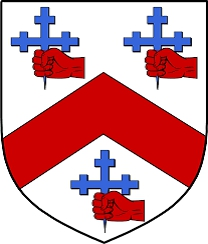

6008867 Countess Jean Macrory of Bute
Grevinna av Bute. Blev högst 58 år.

Född:
1218 Bute Islands, Scotland. [1]
Död:
1276 Dundonald Castle, Ayrshire, Scotland. [1]
Barn:
Personhistoria
1218
Födelse 1218 Bute Islands, Scotland
[1]
1276
Död 1276 Dundonald Castle, Ayrshire, Scotland
[1]
Källor